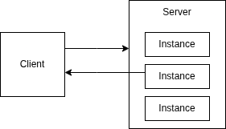
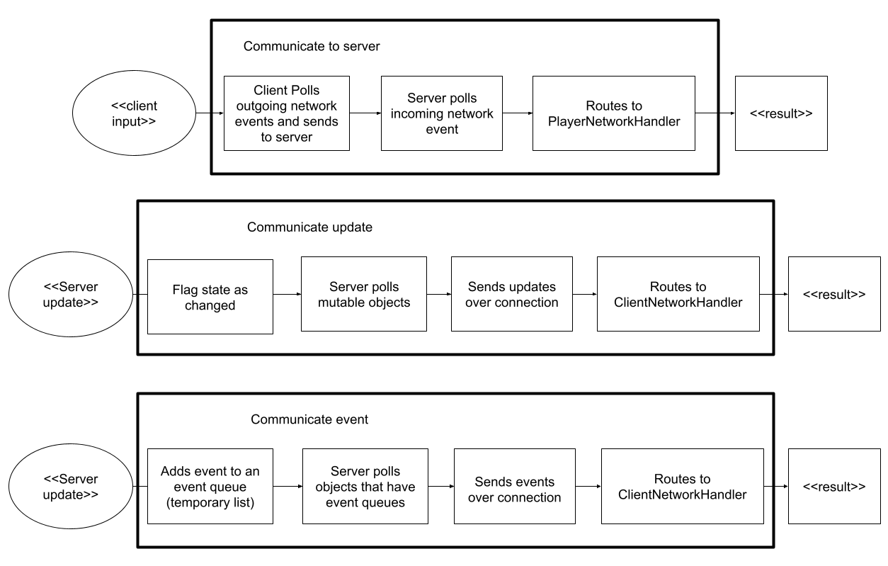
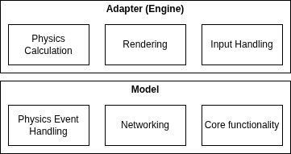
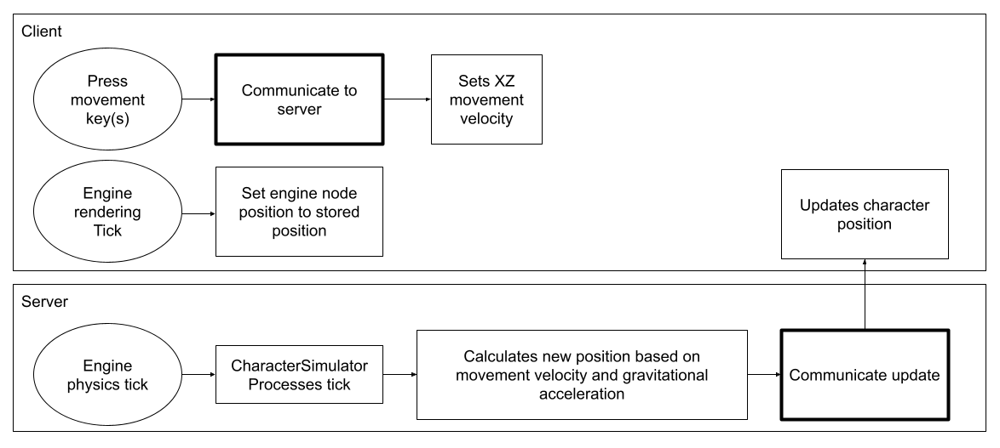
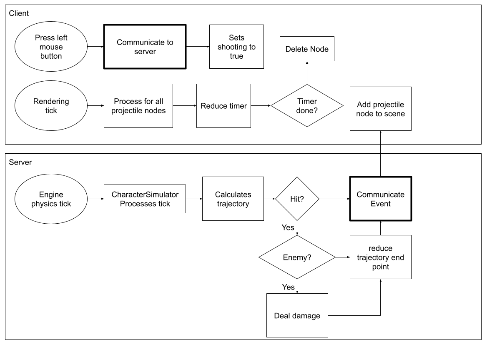
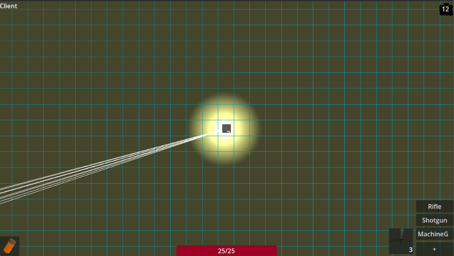
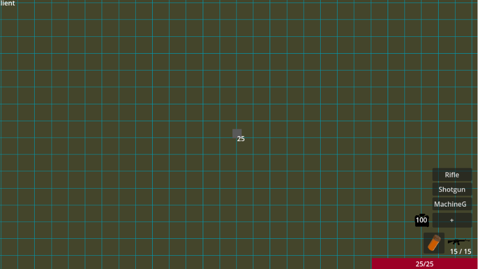

This page contains project artifacts and shows how they evolved over time. It is organized into the network, gameplay dataflow, user interface, and project demo sections.
In the initial connection, the client pings the master server for a list of available game instances. Each game instance has an IP end point that the client can connect to to join the instance.

I used LiteNetLib as a network library as it was a good balance between the flexibility of raw sockets and the ease of a high-level game development network library.
There are three primary ways the client and server communicate. Polling was a natural choice as LiteNetLib polls incoming network events.

This section explains the data flow of gameplay systems. The basic layered architecture remained the same throughout the project, but new components were added as the project progressed.
I did not want to tightly couple my gameplay systems with the game engine, so I separated the model and the adapter layers. The adapter (Godot) would handle physics server side and rendering client side.

Players use WASD to move. The server uses Godot to calculate the new position based on the velocity, and updates the client.

In the prototype, the client streams input information to the server. When the player fires a shot, the server reduces the health of a hit enemy if applicable and communicates the event to the client. The client adds a projectile to the scene which is quickly deleted after its timer runs out.

My initial user interface had components in three corners and the bottom. I placed the health at the bottom, the abilities in the bottom left, weapon information and purchasing in the bottom right, and the currency in the top left. The goal was so that users could clearly distinguish each component, and if they wanted information on a specific component, they could glance at the corner and only see the information they needed.

After receiving feedback about the different components being too far apart, I moved everything to the bottom right corner. This allowed users to quickly navigate between features using a mouse and take in more information at a glance.

A demo of the game prototype.